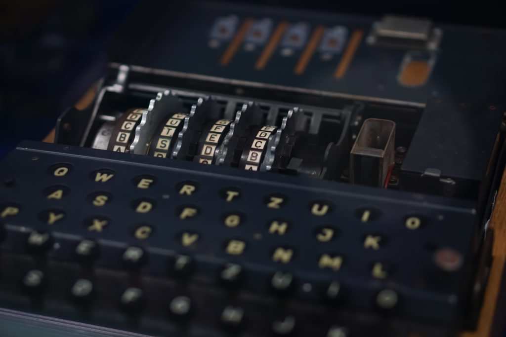
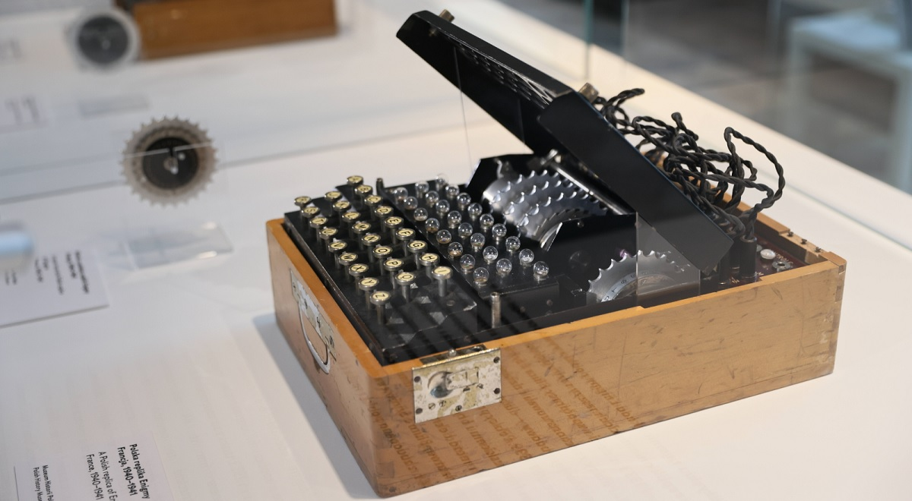

There are known to be about 300 Enigma machines left in museums and private collections around the world, although the exact number of surviving Enigma machines is unknown, and it's suspected that there are a few more 'hiding'.
1 / 3

Did you know?
2 / 3

Did you know?
Turing created a huge machine called the 'Bombe' which managed to crack the enigma code within 20 minutes, he used the work of the Polish mathematicians to help create this massive machine.
3 / 3

Did you know?
The first 'Enigma' was invented by German engineer Arthur Scherbius in 1918, who sought to sell it for commercial, rather than military, purposes.